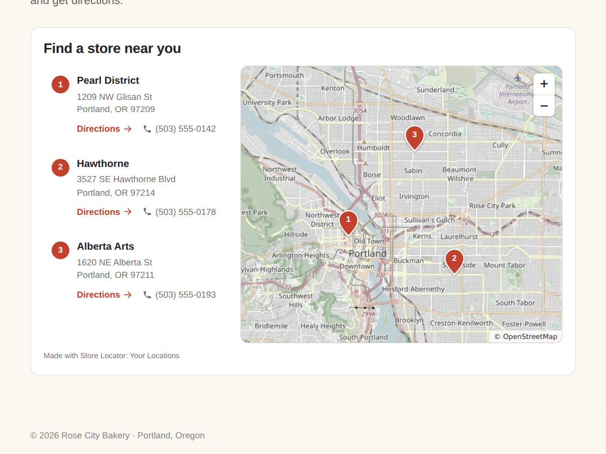

Store Locator: Your Locations
Store locator synced to your Business Info
- Locations come from Business Info, no retyping
- Map pins, list and a Directions link
- Hide locations, pick layout and map style
- Search, Near me and open now (Premium)

What it does
Show visitors where to find you. Store Locator reads the locations you already keep in Business Info and puts each one on a map with a numbered pin, next to a list with the address, phone number and a Directions link. Open a new shop or change a phone number in your dashboard, and the page follows by itself. Nothing to type in twice.
Click a location in the list and its pin grows on the map; click a pin and the list jumps to that location. Directions opens Google Maps with the route. On phones the map sits above the list and the page scrolls as usual.
Pick the layout: list beside the map, map on top, or list only. The map comes in soft, full colour, grey or dark, and the colours, font and card follow your site. Hide any location you don't want listed, such as a warehouse, and sort by main location first or A to Z.
The free plan shows up to 3 locations with a small credit link. Premium shows every location and adds a search box for town, postcode or street, a Near me button that sorts by distance (the visitor's position stays on their device), open now and closing time for each location from its own opening hours, and your own pin colour. It also removes the credit link.
Price
Free
- Up to 3 locations, map and list
- Synced from Business Info
- Directions, phone and e-mail
- Small credit link
Premium
$5/month, yearly 20% off ($4/month)
- Every location
- Search and Near me
- Open now for each location
- Remove the credit link